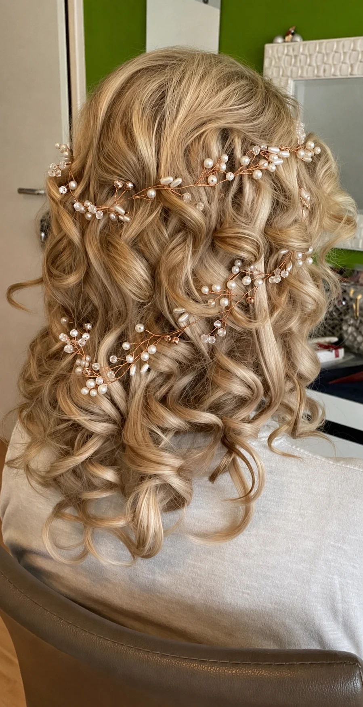
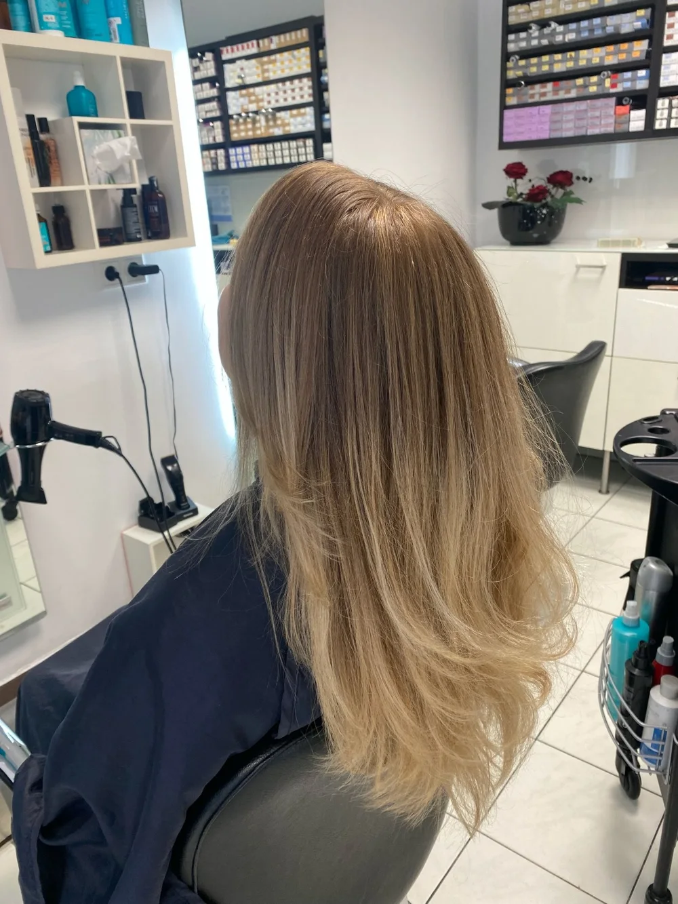
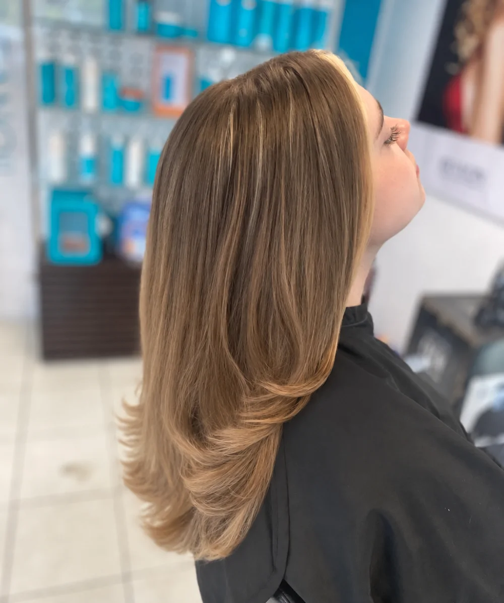
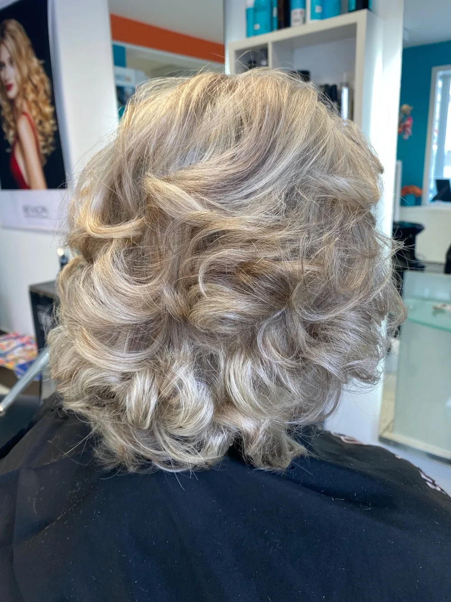
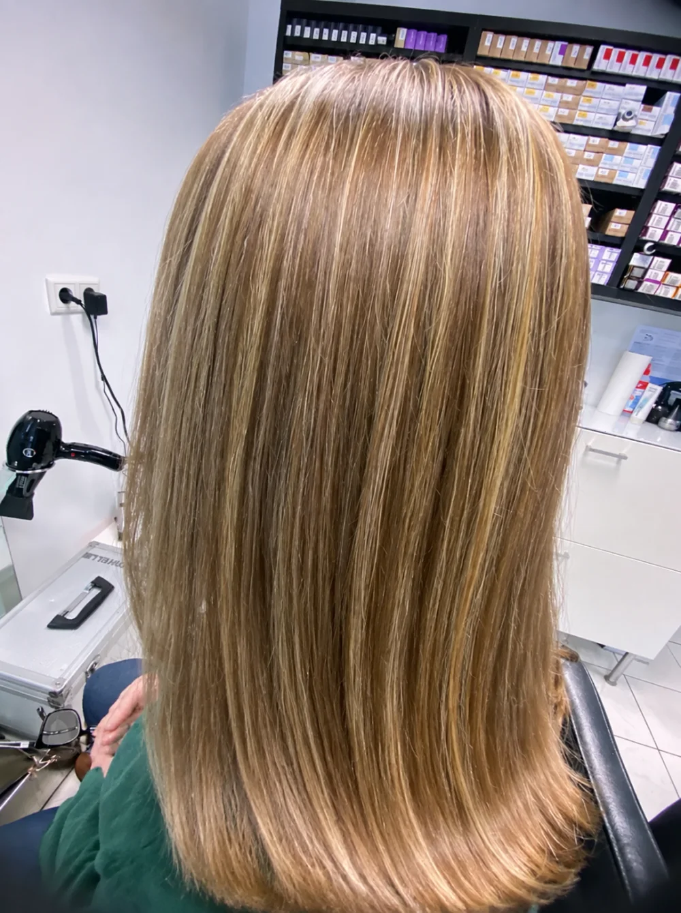
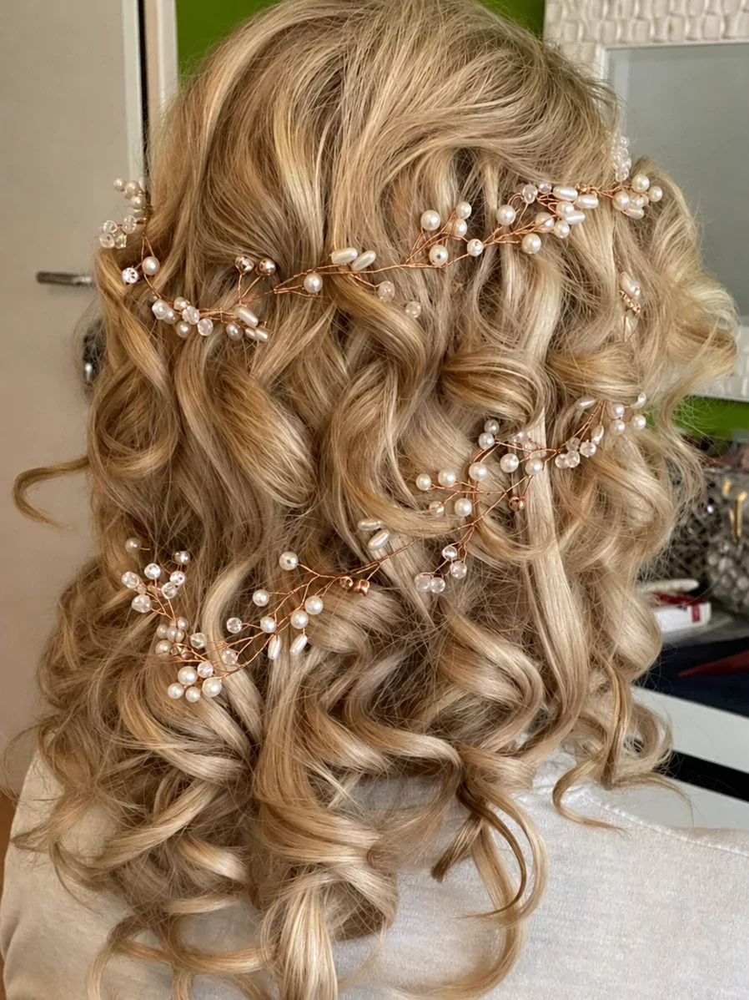
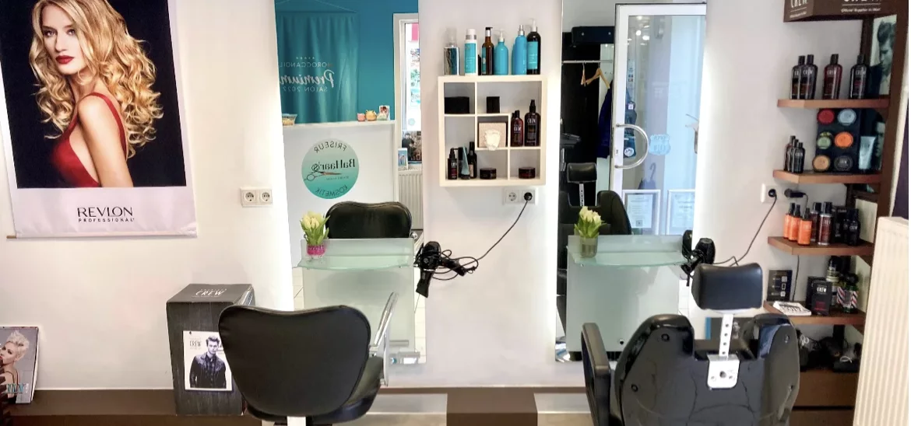

BaHaar’s Styling Studio
Friseurmeisterin in München-Giesing. Schnitt, Farbe, Strähnen, Hochsteckfrisuren und Brautstyling — seit zwanzig Jahren, mit und ohne Termin.
4,8 von 5 über 90 Bewertungen
Meisterbrief Friseurhandwerk
20 Jahre in München am Stuhl
Ohne Termin wenn ein Stuhl frei ist
Was hier gemacht wird
Was ein Termin kostet, hängt an der Haarlänge und am Aufwand — deshalb Spannen und keine Festpreise. Tippen Sie eine Zeile an, dann klappen die Preise auf.
Schnitt & Styling ab 30 €
- Waschen, Schneiden & Föhnen59–69 €
- Waschen & Schneiden45–49 €
- Waschen & Föhnen30–40 €
Farbe & Strähnen ab 30 €
- Glossing oder Abmattierung30 €
- Farbe inkl. Schneiden & Föhnen85–115 €
- Foliensträhnen inkl. Schneiden140–160 €
- Balayage ganzer Kopf, mit Schnitt190–230 €
- Keratin-Glättung190–250 €
Braut & Anlass ab 60 €
- Hochsteckfrisur60–90 €
- Tages-Make-up60 €
- Abend-Make-up80 €
- Brautstyling, Haar und Make-upein Termin, eine Person390–600 €
Herren & Kinder ab 10 €
- Waschen, Schneiden & Stylen35–39 €
- Kontur oder Maschinenschnitt20–29 €
- Bart schneiden10–20 €
- Jungen bis 12, inkl. Waschen25 €
- Mädchen bis 12, inkl. Waschen30–40 €
Pflege & Brauen ab 10 €
- Augenbrauen in Fadentechnik10 €
- Intensiv-Haarkur10 €
- Wimpern färben12 €
- Olaplex-Behandlung30 €

Brautstyling
Haar und Make-up
aus einer Hand.
Frisur und Make-up macht dieselbe Person, an einem Termin. Sie müssen nichts zwischen zwei Dienstleistern abstimmen, und niemand sieht das fertige Bild zum ersten Mal am Hochzeitsmorgen.
390–600 € gesamt, Hairstyling und Braut-Make-up
Termin buchenAus dem Laden
Acht Aufnahmen aus dem Salon an der Perlacher Straße. Keine Katalogbilder — im Hintergrund steht der Laden, in dem sie entstanden sind.








Das Urteil schreiben
die Kundinnen.
4,8 von 5 Sternen
über 90 Bewertungen bei Treatwell
Die jüngsten Bewertungen im Wortlaut, alle mit fünf Sternen. Wenn Sie schon einmal auf meinem Stuhl sassen, freue ich mich über Ihre.
Eine Friseurin mit viel Können und einem guten Gefühl, welcher Schnitt zu einem passt.
Wieder einmal bin ich sehr zufrieden aus dem Salon gegangen. Wurde überzeugt mutiger zu Veränderungen - passend zu meinem Typ - zu sein und mich überraschen zu lassen. Habe es nicht bereut. […] Kundenorientiert - freundlich - empathisch
Termin online, netter Empfang, schöne Hochsteckfrisur und Kaffee gratis. Top!
Ich war jetzt zum dritten Mal da und ich muss sagen, bis jetzt war es immer eine gute Erfahrung. Ich hab zwischendurch auch andere Friseurinnen ausprobiert, aber zu diesem gehe ich doch am Liebsten. […]
Heute bei Maria, hat genau so geschnitten wie ich wollte, alles super!

Perlacher
Straße 2
Ein inhabergeführter Salon in Giesing. Kein Kettenbetrieb und keine Nummer, die aufgerufen wird — wer hier schneidet, steht auch morgen wieder da. Und wenn gerade ein Stuhl frei ist, geht es ohne Termin.


Schönheit beginnt in dem Moment, in dem du beschließt, du selbst zu sein. Coco Chanel
Wo Sie mich finden
Mitten in
Giesing.
Perlacher Straße 281539 München-Giesing
089 692 36 44
Termine laufen über Treatwell — dort sehen Sie die freien Zeiten und buchen rund um die Uhr. Wenn Sie lieber sprechen, rufen Sie an. Und wenn gerade ein Stuhl frei ist, geht es auch ohne Termin.
Öffnungszeiten
- Montag
- 10:00–16:00
- Dienstag–Freitag
- 09:00–19:00
- Samstag
- 09:00–16:00
- Sonntag
- geschlossen